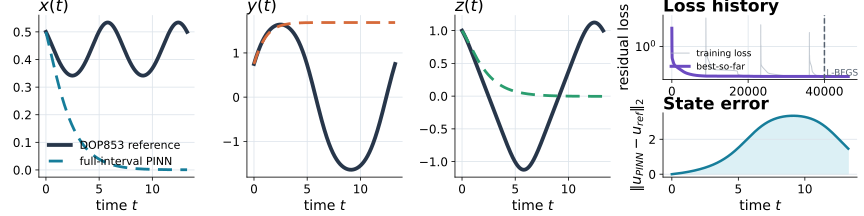
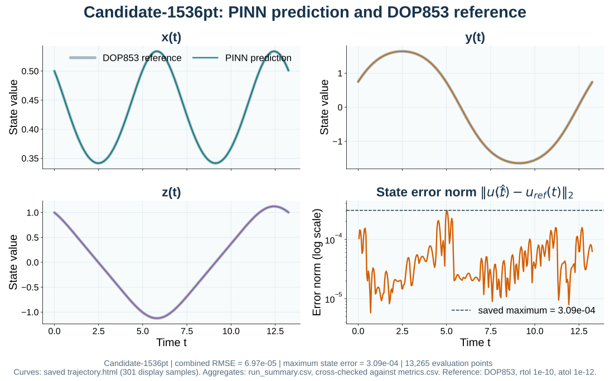
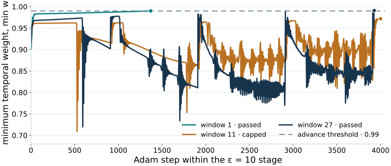
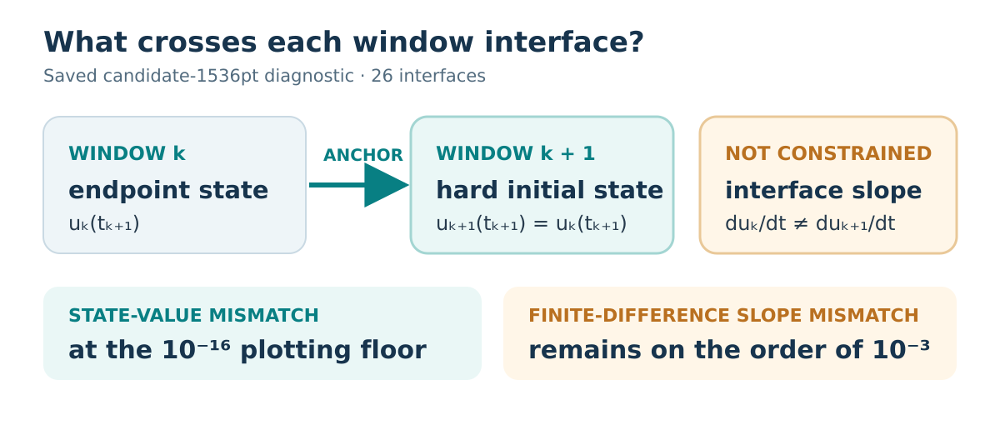

Sequential Causal Training of Windowed PINNs for the Lorenz ODE System
Department of Computer Science and Engineering · United International University · Dhaka, Bangladesh
The 27-window PINN follows a nearly closed Lorenz-system orbit with low state error against a DOP853 reference.
One seed, one initial state, one coefficient set · t ∈ [0, 13.26446]
01Problem
Approximate one nearly closed orbit of the Lorenz initial-value problem.
u(0) = (0.5, 0.75, 1.0)ᵀ
t ∈ [0, 13.26446]
Saved full-interval observation

02Sequential causal window training
One separate 4 × 60 tanh network per windowSet state + weights
For k > 0, use the previous predicted endpoint and copy its trained weights.
Hard initial state: ûₖ(tₖ) = u₀,ₖ exactly.
Autodiff residual
Pass 1,536 ordered collocation times through the trial solution.
Lₖ,ᵢ is the mean of three squared residual components.
Train in four stages
ℒₖ,ε = meanᵢ(wₖ,ᵢ Lₖ,ᵢ)
Weights are detached during each Adam gradient step.
L-BFGS
Minimize the unweighted residual mean.
At most 1,000 optimizer iterations per window.
03Saved candidate evidence

04Measured results
Two saved configurations on the same initial-value problem
| Measure | Full interval | 27 windows |
|---|---|---|
| Parameters | 11,283 | 304,641 |
| Collocation times | 39,793 LHS | 41,446 uniform |
| Combined RMSE | 2.237 | 6.97 × 10⁻⁵ |
| Max error norm | 3.346 | 3.09 × 10⁻⁴ |
| Residual MSE collocation grid | 2.80 × 10⁻⁴ | 1.87 × 10⁻⁷ |
| Recorded wall time | 4,529 s | 881 s |
Causal weights

Window interfaces

05Scope
- One seed, initial state, coefficient set, and nearly closed interval.
- Predicted-state handoff can carry earlier error forward.
- No saved matched windowed run without causal weights.
Next: compare matched configurations across several seeds, changing one option at a time.